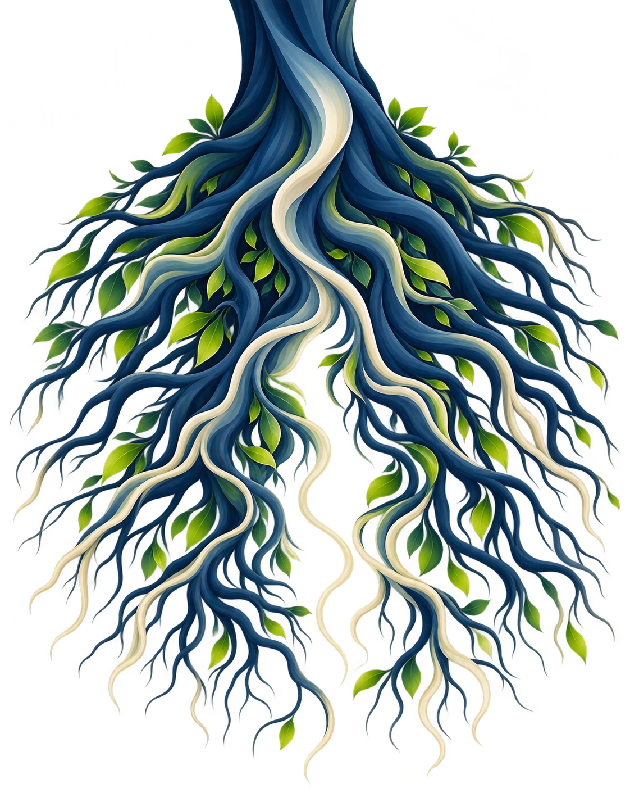

Nossas raízes.
Nossa história.
Cada família carrega uma história. Cada sobrenome guarda lembranças, caminhos e origens que fazem parte de quem somos.
Explore as raízes da nossa turma e descubra como diferentes histórias se conectam pelo mundo.
Toda história começa
em algum lugar.
As raízes de uma árvore representam nossas origens e as gerações que vieram antes de nós.
Assim como elas se espalham pela terra, nossas famílias percorreram diferentes caminhos até que suas histórias se encontrassem.
Qual é a história
do seu sobrenome?
Digite seu sobrenome para conhecer possíveis origens históricas, significados e curiosidades.
Quando uma origem for identificada com confiança suficiente, uma linha animada mostrará o país no mapa.
As respostas são geradas por inteligência artificial. A origem de um sobrenome não comprova a ancestralidade de uma pessoa.

Selecione um ponto ou um nome abaixo do mapa para conhecer as origens e localidades informadas pela turma.
Um mundo de histórias.
Diferentes caminhos, diferentes origens. Uma história que construímos juntos.
As origens e localidades exibidas foram informadas no levantamento da turma. Os pontos no mapa são aproximados e não representam endereços familiares. Bessarábia é uma região histórica, indicada aqui pela área aproximada da Moldávia atual.
Possível país de origem
História e significado
Esta explicação é gerada por IA e não substitui documentos históricos nem pesquisas genealógicas.
Raízes diferentes.
Histórias que se encontram.
Conhecer de onde viemos é valorizar as gerações que fizeram parte da nossa história e os caminhos que nos trouxeram até aqui.